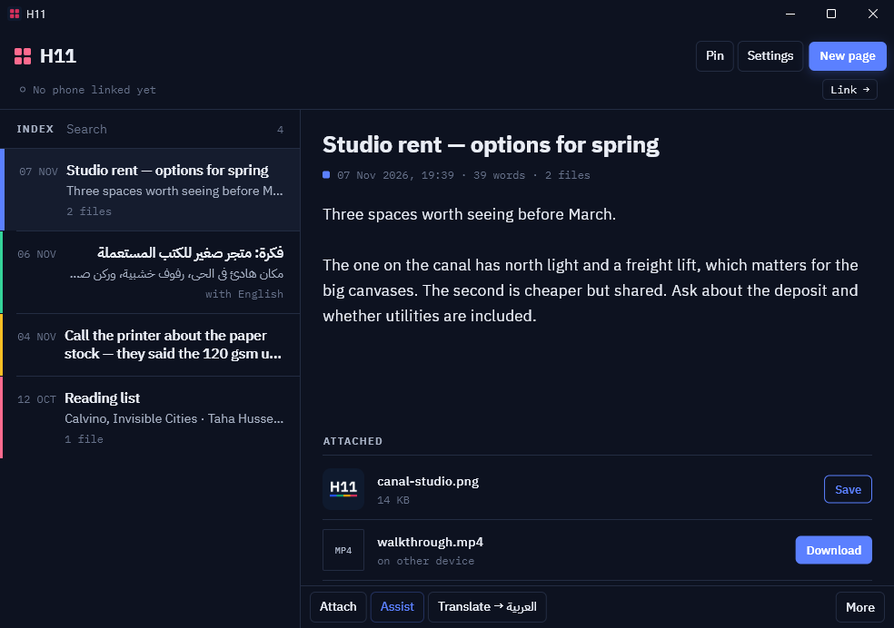

Write on one.
Find it on the other.
A small notebook for your Android phone and your Windows computer. Text, photos, video and any file move between them over your own Wi-Fi, encrypted end to end. Arabic ⇄ English translation is built in.
v1.0.0 · Android 7+ · Windows 10/11 · free · no account · no server
